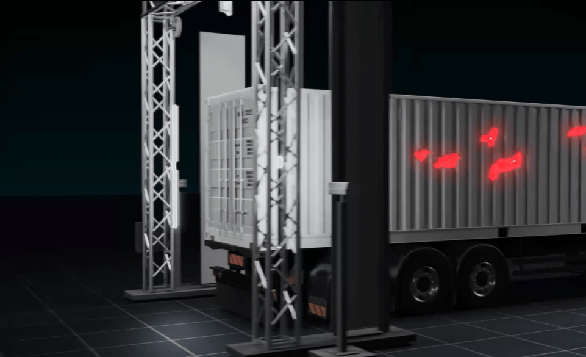

Product Details
Containers at the ports are the key asset for shipping and lodging the goods from one country to another country. Normally, when the shipping company hires the containers from the container companies, so they need to know the health or the condition of the container, whether at what capacity it can bear the weights of goods or items. For this purpose, the container health or the audit report is required from the concerned body to give the clearance of the container, whenever they have to ship the container form one side to another. In this regard, manual checking is being done by the auditors and give the report for container condition and its bearing weightage capacity.
Key Benefits
An AI-base solution for automatic detection of different types of container damages (e.g.
Dents. Bends, Rusting, Corrosion, etc), classifying it, measuring it, and finally comparing
it.
Ensures a significant reduction in false damage claims, ensuring vessel and workers safety
both on the ground and aboard ship.
Saves millions of dollars for terminal operators and vessel owners. Increases capacity,
enhances terminal productivity and efficiency. Highly scalable, Designed for 247 operating
under toughest conditions.
How Organization Get Improve and take Advantages
Due to the humidity and different conidtions of the sea and ocean, the container condition and its corrosion, dent, bendings and holes would be depreciated and due to the raw weather conditions, it is deteriorated by time to time and one day, its condition is not appropriate to send for shipping. In all these process, Container needs proper audit with correct report about the container condition and its health. The solution offers seamless system with AI Powered desinged Solution for finding the appropriate condition or health of the containers in large quantity. This process can be done through AI Vision techniques and provide the detail of container damages with their holes, dents, and corrosions. It is highly scalable and adaptable to growing demands, with both cloud and on-premise deployment options available. Designed for 24/7 reliability, it operates continuously under the toughest conditions, ensuring uninterrupted performance and boosting operational efficiency.
Planning & Strategy
Our approach to planning and strategy for terminal automation centers on helping you implement a
clear, actionable roadmap for success with AI-based solutions. We begin by assessing your
terminal operations, identifying key areas for improvement in container damages, holes,
corrosion and capacity, and pinpointing the deteriorate of containers. Together, we define your
long-term vision for automation and break it down into achievable milestones, ensuring every
step aligns with your operational goals through AI Based Technologies.
Through tailored coaching, we guide you in deploying AI-powered solutions that optimize
leadership, operational efficiency, market positioning, and financial growth. Whether it's
implementing scalable solutions for container condition at before terminal, or hiring of
containers by shipping companies, Gates, Weighbridges, or Quay Cranes. That report can be
integrated seamlessly with Terminal Operating Systems (TOS), and we provide the insights and
tools needed to enhance productivity.
Our strategy sessions focus on setting realistic targets, navigating industry challenges, and
optimizing terminal resources. With a cloud-based solution that's easy to deploy and manage
(with on-premise options available), we empower your terminal to operate 24/7 under the toughest
conditions. This innovative approach increases productivity and efficiency, saving millions
while helping your business thrive in today's competitive logistics landscape.
Frequently asked questions
It's an AI-powered system based on AI-Vision technology that provides real-time
container health monitoring by detecting corrosion, holes, dents, and damages.
There are several advantages. Ports can verify and validate audit reports using
this technology, effectively reducing operational and financial risks.
Yes! You can simply fill out the form below to schedule a meeting. Our team will
then contact you and provide a Proof of Concept (POC) accordingly.
AI Product Solution
More Products

How Can We Help
If you need any helps, please feel free to contact us.
+923218287590 info@Perceptron Gloabals.com